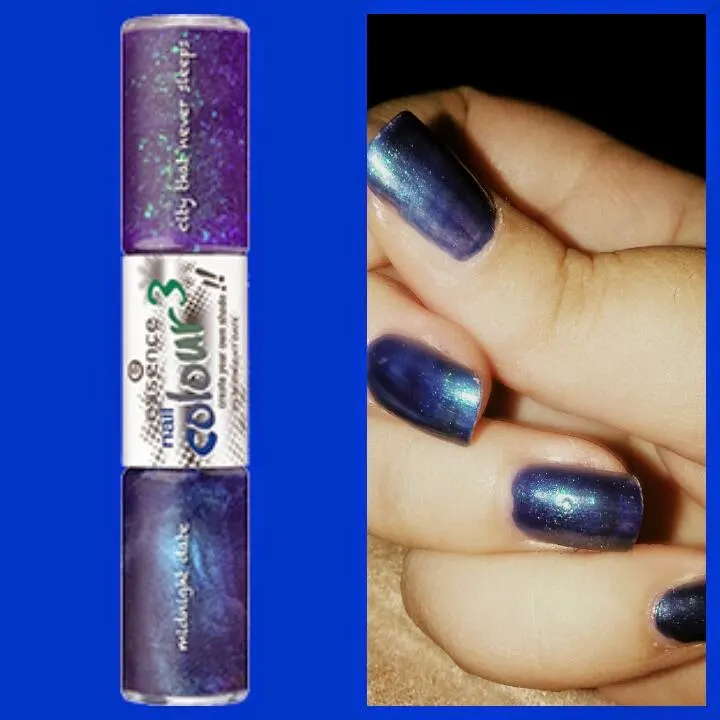
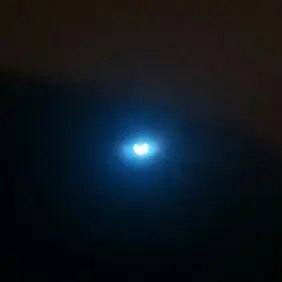

smaltini belli + eclissi solare
Buongiornooooo
Buon venerdì...
In attesa dell'eclissi che sta quasi per arrivare, visto che sono le 10.08 minuti, voglio mostrarvi le mie unghiette.
Questa volta però, non c'è una nail art.
Ho voluto provare uno smaltino duo che ho vinto ad un giveaway proprio in questi giorni.
Vi dico anche indetto da chi.
Questa è la pagina Facebook di Lovely Make Up ^_^ ragazza dolcissima e carinissima.
https://m.facebook.com/profile.php?id=154600754637353
Comunque parliamo dell' Essence.. che a dirvi la verità, non avevo ancora mai provato questo brand.
Voi direte: ma come? ormai sono anni che è sul mercato..
Ebbene sì, non l'avevo mai provato perché non ho mai sentito l'esigenza di provare qualche prodotto di questa marca.
Ora che l'ho provata posso dire anch'io la mia..
Lo smalto che vi sto per parlare è:
● Smalto nail colour 3, 01 MIDNIGHT DATE
Vi mostro la foto :D

Dunque, da un lato troviamo un blu notte e dall'altro lato un brillantinato. Che da solo va su un violaceo intrasparenza,ovviamente con questi brillantini (che in foto non mi pare vedere), e sopra il blu si vedono solo dei brillantini,pagliuzze,non so come definirli perché non sono veri e propri brillantini. Comunque sono verdi.
Devi però farci caso.
Beh tutto sommato a me piace l'effetto che fa. Semplice ma carino.
Ho voluto puntare su qualcosa di semplice prima di Pasqua perché così facciamo qualche cosa di carino in quel periodo.
Che ve ne pare allora questo smalto?
Ditemi la vostra..
Ah comunque visto che nel frattempo è passata l'ora dell'eclissi solare. Vi faccio vedere anche una foto di essa ahahahah

Ecco la luna per il 70% davanti al so le.
Hoban fatto la foto mettendo una radiografia davanti. Anche perché in modo diverso non si riusciva ahahahah vedere niente.
Bellissima la luna così però vero?
Mi affascinano tantissimo queste cose.
Spero siete stati attenti anche voi nel guardarla ad occhio nudo poiché fa male agli occhi la vista dell'eclissi senza una protezione.
Beh, spero di aver detto tutto.
Fatemi vedere le vostre foto dell'eclissi sono curiosa ihihih
Buonissima giornata amici :*